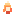

Cores
The vanilla Surtling Core visual used as a path-driven Orbital, with colliders stripped from the cached runtime copy.
Preview clip coming
Modifiers
PositionRotationCountScaleLuminanceHueSpeedSpacingLengthRadiusCyclesDriftSnakeGlueSpinSpin Speed